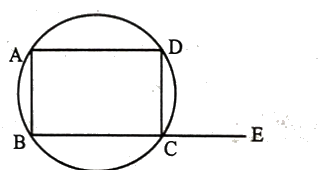
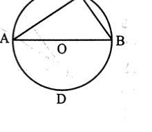
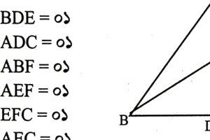
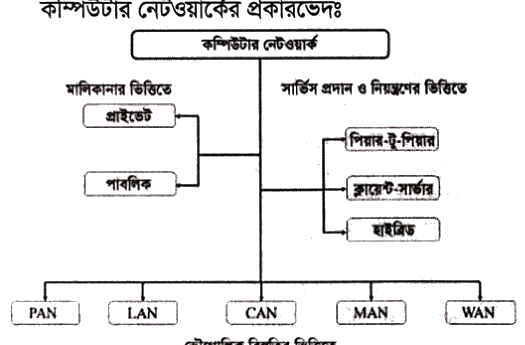

কোলেস্টেরল: HDL (ভালো চর্বি) বনাম LDL (খারাপ চর্বি যা ধমনীতে প্লাক ও অ্যাথেরোস্ক্লেরোসিস সৃষ্টি করে)।
ঘূর্ণিঝড় সৃষ্টি: সমুদ্রপৃষ্ঠের তাপমাত্রা ২৭°C অতিক্রম করলে তীব্র নিম্নচাপ ও কোরিওলিস বলের কারণে ঘূর্ণিবায়ুর উৎপত্তি হয়।
🎯 Part 2: বিগত সালের প্রামাণ্য প্রশ্নব্যাংক ও স্ব-মূল্যায়ন কুইজ
লিখিত পরীক্ষার প্রতিটি প্রশ্নের নিচে স্ব-মূল্যায়ন ও সমাধান বোতাম রয়েছে
অর্জিত স্কোর: ০ / ২০০
প্রশ্ন ১বাংলা সাহিত্য ও প্রবন্ধবাংলা প্রবন্ধনম্বর: ২০
'নৈতিক মূল্যবোধ' বিষয়ের একটি প্রবন্ধ লিখুন।
স্ব-মূল্যায়ন (Self-Evaluation):
নৈতিক মূল্যবোধ
ভূমিকা: মানুষ সামাজিক জীব। সমাজে শান্তিময় ও সুশৃঙ্খল সহাবস্থানের প্রধান শর্ত হলো সুনীতি ও আদর্শের অনুশীলন। সততা, পরোপকার, সত্যবাদিতা, মানবিক সংবেদনশীলতা ও ন্যায়পরায়ণ আচরণের সমন্বিত রূপই হলো নৈতিকতা। ব্যক্তি থেকে সমাজ এবং সমাজ থেকে রাষ্ট্র—প্রতিটি স্তরে টেকসই উন্নয়ন ও স্থায়িত্বের মূল ভিত্তি নৈতিক মূল্যবোধ।
সংজ্ঞা ও তাৎপর্য: 'নৈতিকতা' শব্দটির ইংরেজি প্রতিশব্দ 'Morality', যা ল্যাটিন শব্দ 'Moralis' (আচার-আচরণ বা রীতি) থেকে উদ্ভূত। সমাজ কর্তৃক স্বীকৃত ন্যায়-অন্যায়, ভালো-মন্দের বিচার-বিবেচনার মানদণ্ডই হলো নৈতিক মূল্যবোধ। আইন মানুষকে বাহ্যিকভাবে নিয়ন্ত্রণ করে, কিন্তু নৈতিকতা মানুষের অন্তরের বিবেককে জাগ্রত করে অন্যায় থেকে বিরত রাখে।
নৈতিক মূল্যবোধের প্রধান উপাদানসমূহ:
সততা ও সত্যনিষ্ঠা: সকল পরিস্থিতিতে সত্যের পক্ষে অবিচল থাকা এবং দুর্নীতির পথ পরিহার করা।
দায়িত্বশীলতা ও কর্তব্যবোধ: অর্পিত রাষ্ট্রীয় ও সামাজিক দায়িত্ব নিষ্ঠার সাথে পালন করা।
সহমর্মিতা ও মানবপ্রেম: আর্তমানবতার সেবায় আত্মনিয়োগ এবং অপরের দুঃখ-কষ্টে পাশে দাঁড়ানো।
ন্যায়পরায়ণতা: ধর্ম, বর্ণ বা শ্রেণির ঊর্ধ্বে উঠে সবার জন্য সমঅধিকার নিশ্চিত করা।
নৈতিক অবক্ষয় ও উত্তরণের উপায়: বর্তমান ভোগবাদী সমাজে অন্ধ অর্থলিপ্সা, ক্ষমতার মোহ ও সামাজিক যোগাযোগ মাধ্যমের অপব্যবহারের ফলে পারিবারিক ভাঙন, দুর্নীতি ও সামাজিক অস্থিরতা বৃদ্ধি পেয়েছে। এই অবক্ষয় রুখতে প্রাথমিক শিক্ষা থেকেই নৈতিক মূল্যবোধের পাঠ বাধ্যতামূলক করা, পরিবারে সততার চর্চা এবং রাষ্ট্রে আইনের শাসন ও জবাবদিহিতা নিশ্চিত করা অপরিহার্য।
উপসংহার: নৈতিকতাহীন সমাজ বা রাষ্ট্রব্যবস্থা বালির বাঁধের মতো ক্ষণভঙ্গুর। একটি বৈষম্যহীন, মানবিক ও প্রগতিশীল সমৃদ্ধ বাংলাদেশ গড়তে নৈতিক মূল্যবোধের সার্বজনীন চর্চাই হোক আমাদের জাতীয় শপথ।
প্রশ্ন ২বাংলা সাহিত্য ও ভাবার্থবাংলা সাহিত্যনম্বর: ১০
অনাহারক্লিষ্ট ও ক্ষুধাপীড়িত বাস্তবতায় অলীক রোমান্টিকতা কিংবা সুকুমার কাব্যবিলাসের কোনো মূল্য নেই। বেঁচে থাকার জন্য অন্নের সন্ধানই যেখানে মানবজীবনের নির্মম সংগ্রাম, সেখানে আকাশের সৌন্দর্যের প্রতীক পূর্ণিমার চাঁদও ক্ষুধার্ত মানুষের চোখে কেবল একটি ঝলসানো রুটির রূপ ধারণ করে। তাই রূপ-সৌন্দর্য ভুলে রুঢ় সামাজিক সত্য ও শোষিত মানুষের মৌলিক অধিকার আদায়ের সংগ্রামে আত্মনিয়োগ করাই কবির পরম প্রত্যয়।
প্রশ্ন ৩বাংলা পত্রলিখনবাংলা আবেদনপত্রনম্বর: ১০
কোনো শিক্ষা-প্রতিষ্ঠানের শূন্যপদে সহকারী শিক্ষক হিসেবে নিয়োগ প্রদানের জন্য একটি আবেদনপত্র লিখুন।
স্ব-মূল্যায়ন (Self-Evaluation):
১১.০৭.২০২৫
বরাবর,
সভাপতি
ম্যানেজিং কমিটি / বিদ্যালয় পরিচালনা পর্ষদ
উপজেলা কেন্দ্রীয় আব্দুল গনি সরকার উচ্চ বিদ্যালয়
উথলী, শিবালয়, মানিকগঞ্জ-১৮৫০।
বিষয়: সহকারী শিক্ষক (বাংলা / সাধারণ) পদে নিয়োগের জন্য আবেদন।
জনাব,
বিনীত নিবেদন এই যে, গত ১ জুলাই ২০২৫ তারিখে দৈনিক প্রথম আলো পত্রিকায় প্রকাশিত বিজ্ঞপ্তির মাধ্যমে জানতে পারলাম যে, আপনার ঐতিহ্যবাহী বিদ্যালয়ে ২ জন 'সহকারী শিক্ষক' নিয়োগ দেওয়া হবে। আমি উক্ত পদের একজন যোগ্য প্রার্থী হিসেবে আমার শিক্ষাগত যোগ্যতা ও জীবনবৃত্তান্ত আপনার সদয় বিবেচনার জন্য নিম্নে পেশ করছি:
১. ব্যক্তিগত তথ্যাবলি:
প্রার্থীর নাম: মোঃ হাসিবুল হাসান | পিতার নাম: মোঃ রফিকুল ইসলাম | মাতার নাম: ফাতেমা বেগম | স্থায়ী ঠিকানা: গ্রাম: উথলী, ডাকঘর: উথলী, উপজেলা: শিবালয়, জেলা: মানিকগঞ্জ | জন্ম তারিখ: ১৫.০৩.১৯৯৭ | জাতীয়তা: বাংলাদেশী | ধর্ম: ইসলাম | রক্ত গ্রুপ: B+
২. শিক্ষাগত যোগ্যতা:
পরীক্ষার নাম
বোর্ড / বিশ্ববিদ্যালয়
পাসের সন
বিভাগ / জিপিএ
এসএসসি
ঢাকা বোর্ড
২০১২
৫.০০
এইচএসসি
ঢাকা বোর্ড
২০১৪
৫.০০
বি.এ (সম্মান)
জাহাঙ্গীরনগর বিশ্ববিদ্যালয়
২০১৮
৩.৫০ (১ম শ্রেণি)
এম.এ
জাহাঙ্গীরনগর বিশ্ববিদ্যালয়
২০১৯
৩.৬০ (১ম শ্রেণি)
অতএব, মহোদয় সমীপে বিনীত প্রার্থনা, আমার শিক্ষাগত যোগ্যতা ও নিষ্ঠা বিবেচনা করে আমাকে উক্ত পদে নিয়োগ দানে বাধিত করবেন।
বিনীত নিবেদক,
মোঃ হাসিবুল হাসান
প্রশ্ন ৪ইংরেজি থেকে বাংলা অনুবাদঅনুবাদনম্বর: ১০
Translate into Bengali: "Health is wealth. A good health is guarantee for happiness. A healthy poor man is happier than a sick moneyed man. A healthy man is an asset to his family. A sick man, on the other hand, is liability to all."
স্ব-মূল্যায়ন (Self-Evaluation):
বঙ্গানুবাদ:
স্বাস্থ্যই সকল সুখের মূল (স্বাস্থ্যই সম্পদ)। সুস্বাস্থ্যই সুখের সর্বোত্তম নিশ্চয়তা। একজন সুস্থ নির্ধন ব্যক্তি একজন অসুস্থ ধনকুবের অপেক্ষা অনেক বেশি সুখী। একজন সুস্বাস্থ্যের অধিকারী মানুষ তাঁর পরিবারের জন্য অমূল্য সম্পদ। পক্ষান্তরে, একজন অসুস্থ মানুষ সকলের জন্যই একটি বোঝা বা দায়স্বরূপ।
প্রশ্ন ৫বাংলা ব্যাকরণবাংলা ব্যাকরণনম্বর: ১৫
নিচের প্রশ্নগুলির উত্তর দিন: a) ণ-ত্ব বিধানের সংজ্ঞা লিখুন এবং উদাহরণসহ ৪টি সূত্র আলোচনা করুন। b) বাংলা উপসর্গযোগে ৫টি শব্দ গঠন করুন। c) শুদ্ধরূপে বানানগুলো লিখুন: a) আকাংখা b) নিঃস্বাস c) উর্দ্ধ d) অঞ্জলী e) ষ্টেসন
স্ব-মূল্যায়ন (Self-Evaluation):
উত্তর:
a) ণ-ত্ব বিধানের সংজ্ঞা ও ৪টি সূত্র:
যেসব নিয়মানুসারে বাংলা ভাষায় ব্যবহৃত তৎসম বা সংস্কৃত শব্দের বানানে দন্ত্য-ন পরিবর্তিত হয়ে মূর্ধন্য-ণ হয়, তাকে ণ-ত্ব বিধান বলে।
Write an essay on "The Role of Media in Establishing Democracy". [Hints: Introduction-Role in educating people-Role in forming public opinions-Role in policy formation-Role in issues of misinformation and disinformation-Role in media ethics-Role in changing social and political culture-Role in media accountability-Conclusion].
স্ব-মূল্যায়ন (Self-Evaluation):
The Role of Media in Establishing Democracy
Introduction: Media is universally acclaimed as the "Fourth Estate" of a democratic society, standing alongside the executive, legislature, and judiciary. A vibrant, independent media acts as a watchdog of public interest, ensuring transparency, accountability, and the safeguarding of citizens' constitutional liberties.
Educating Citizens & Forming Public Opinion: In a genuine democracy, informed citizenship is vital. Print, broadcast, and digital media disseminate critical news regarding government initiatives, public expenditures, and political discourse. Through in-depth investigative reports, editorials, and public debates, the media cultivates discerning public opinion, empowering voters to make rational electoral choices.
Bridging Public Demands and Policy Formulation: Media bridges the gulf between grassroots citizens and policymakers. By spotlighting marginalized voices, human rights violations, and administrative malpractices, the media compels authorities to enact progressive legislative and institutional reforms.
Tackling Misinformation & Upholding Ethics: In the era of algorithmic social media, the proliferation of disinformation, fake news, and deepfakes severely distorts democratic sanity. Ethical journalism rooted in rigorous fact-checking, objectivity, fairness, and non-partisanship is indispensable to maintain credibility.
Transforming Culture & Media Accountability: Beyond political reporting, media pioneers progressive social transformation by advocating gender parity, tolerance, and civic consciousness. Concurrently, press councils and independent regulatory bodies must ensure media houses remain accountable and immune to oligarchic captured interests.
Conclusion: Without press freedom, democracy degenerates into authoritarianism. A fearless, ethical, and pluralistic media ecosystem is the ultimate guarantee of a resilient democratic future.
প্রশ্ন ৭English Letter to EditorEnglish Letterনম্বর: ১০
Write a letter to the editor of a renowned English daily newspaper expressing your concern regarding air pollution and the air quality index.
স্ব-মূল্যায়ন (Self-Evaluation):
12 July 2026
The Editor,
The Daily Star,
19 Karwan Bazar, Dhaka-1215.
Subject: Grave concern over catastrophic air pollution and soaring Air Quality Index (AQI) in Dhaka
Sir,
I would be very grateful if you kindly publish the following letter in your widely read daily to awaken urgent administrative action against our toxic atmospheric emergency.
Air Pollution: A Silent Health Emergency in Dhaka
According to the global Air Quality Index (AQI) rankings, Dhaka is consistently topping the list of the world's most polluted megacities, frequently registering hazardous AQI scores exceeding 300. Unplanned construction dust, archaic brick kilns encasing the periphery, emissions from unfit fossil-fuel vehicles, and industrial effluents have turned the urban air toxic.
Prolonged inhalation of particulate matter (PM2.5 and PM10) is triggering severe pulmonary ailments, pediatric asthma, chronic bronchitis, and cardiovascular morbidity. To save millions of citizens, the government must enforce strict environmental compliance: permanently shutting down illegal brick kilns, mandating covered transport for construction materials, expanding green electric public transit, and conducting round-the-clock road wetting.
Breathing clean air is a fundamental human right. We demand immediate, stringent enforcement before the damage becomes irreversible.
Yours sincerely,
Abdul Rahman
Dhanmondi, Dhaka.
প্রশ্ন ৮English ComprehensionEnglish Comprehensionনম্বর: ১০
Read the passage and answer the following questions: "Climate change refers to long term shifts in global weather patterns, primarily caused by human activities like fossil fuels, deforestation and industrial pollution. These activities release greenhouse gases, such as carbon dioxide and methane which trap heat in earth's atmosphere, leading to global warming. The effects of global warming are widespread and alarming. Rising temperatures are causing polar ice caps to melt, leading to rising of sea levels, increasing threats to lives and nature. Extreme weather events, such a hurricane, droughts, floods and many other natural calamities are more frequent and severe, threatening agriculture, water sources and human settlements, especially in the vulnerable regions. To combat climate change, governments, organizations and individual must take action. Strategies include reducing green house gas emissions, switching to renewable energy sources like solar and wing and planting trees to absorb carbon dioxide. The 'Paris Agreement' aims to limit and integrate all efforts in the fight global warming."
Questions: a) What are the primary causes of climate change? b) Mention the effects of global warming. c) How does climate change threaten human settlements? d) What strategies can be taken to combat climate change issues? e) What is the aim of the "Paris Agreement"?
স্ব-মূল্যায়ন (Self-Evaluation):
Answers to the Questions:
a) Primary causes:
The primary anthropogenic causes of climate change are the unrestrained combustion of fossil fuels, rampant deforestation, and industrial emissions that release excessive greenhouse gases (such as carbon dioxide and methane) into the atmosphere.
b) Effects of global warming:
The effects include thermal expansion and polar ice-sheet melting, accelerating sea-level rise, and escalating the frequency and devastation of extreme meteorological disasters such as super-hurricanes, prolonged droughts, and flash floods.
c) Threat to human settlements:
Climate change imperils human habitats by submerging low-lying coastal coastal settlements under rising seas, depleting potable freshwater aquifers, and destroying agricultural yields, creating millions of displaced climate refugees.
d) Strategies to combat climate change:
Crucial strategies include drastically curtailing greenhouse gas emissions, transitioning to clean renewable energy sources (such as solar and wind), undertaking mass afforestation to sequester carbon, and adopting eco-friendly urban infrastructure.
e) Aim of the Paris Agreement:
The landmark 2015 Paris Agreement aims to unite international commitments to hold the increase in global average temperature well below 2°C above pre-industrial levels, pursuing efforts to limit it strictly to 1.5°C.
প্রশ্ন ৯English Vocabulary & HomophonesEnglish Vocabularyনম্বর: ১০
Make sentences with the following pairs of words having similar pronunciation: a) Compliment / Complement b) Principal / Principle c) Desert / Dessert d) Affect / Effect e) Elicit / Illicit
স্ব-মূল্যায়ন (Self-Evaluation):
Sentences with Distinguishable Meanings:
a) Compliment (প্রশংসা / শুভেচ্ছা): It is a wonderful compliment to the bride on her wedding day. Complement (পরিপূরক): Rice and fish form a delicious nutritional complement to each other.
b) Principal (প্রধান / অধ্যক্ষ): He was appointed as the principal of the renowned college. Principle (মূলনীতি / আদর্শ): A man of high moral principles never compromises with corruption.
c) Desert (মরুভূমি / পরিত্যাগ করা): The soldiers were ordered not to desert their posts in the harsh Sahara desert. Dessert (মিষ্টিমুখ / খাবারের শেষ পদ): We ordered chocolate mousse and vanilla ice cream for dessert.
d) Affect (verb - প্রভাবিত / ক্ষতি করা): The river erosion will severely affect the livelihoods of the coastal families. Effect (noun - ফলাফল / প্রভাব): The new monetary policy produced an immediate deflationary effect on commodity prices.
e) Elicit (প্রকাশ করা / টেনে বের করা): The detective managed to elicit the truth from the suspect through careful questioning. Illicit (অবৈধ / বেআইনি): The smuggling of illicit synthetic drugs across the border is strictly forbidden by law.
প্রশ্ন ১০English Grammar (Correction)English Grammarনম্বর: ৫
Correct the following sentences: a) There will be always conflict between old the young. b) I think that there were a problem. c) Neither child nor the mother were present.
স্ব-মূল্যায়ন (Self-Evaluation):
Corrected Sentences:
a) Incorrect: There will be always conflict between old the young. Correct: There will always be a conflict between the old and the young. (Explanation: 'The old' and 'the young' require definite articles to represent the whole collective class.)
b) Incorrect: I think that there were a problem. Correct: I think that there was a problem. (Explanation: Singular noun phrase 'a problem' governs the singular auxiliary 'was'.)
c) Incorrect: Neither child nor the mother were present. Correct: Neither the child nor the mother was present. (Explanation: In 'Neither... nor' constructions, the verb agrees in number with the nearest subject; 'the mother' is singular, hence 'was'.)
প্রশ্ন ১১English Grammar (Prepositions)English Grammarনম্বর: ৫
Fill in the blanks with appropriate prepositions: a) His fans threw petals _____ his car. b) I travelled home _____ foot. c) Mira and her family will be away _____ Monday. d) It rained _____ five days without stopping. e) They were _____ no danger.
স্ব-মূল্যায়ন (Self-Evaluation):
Answers:
a) His fans threw petals at his car.
b) I travelled home on foot. (হেঁটে যাওয়া বোঝাতে 'on foot' বসে।)
c) Mira and her family will be away from Monday.
d) It rained for five days without stopping. (নির্দিষ্ট সময়কাল বা ব্যাপ্তি বুঝাতে 'for' বসে।)
e) They were in no danger. ('In danger' বা 'in no danger' প্রমিত ফ্রেইজ।)
প্রশ্ন ১২English Grammar (Transformation)English Grammarনম্বর: ৫
Rewrite sentences as directed: a) The noise from downstairs prevented me sleeping last night. [Change the voice] b) "Good night, my sweet boys" said the mother, as she was leaving the room. [Change the speech]
স্ব-মূল্যায়ন (Self-Evaluation):
Answers:
a) Passive Voice: I was prevented from sleeping last night by the noise from downstairs.
b) Indirect Speech: The mother bade her sweet boys good night as she was leaving the room.
প্রশ্ন ১৩পাটিগণিত (সরল মুনাফা)পাটিগণিতনম্বর: ৫
বার্ষিক শতকরা ৬ টাকা মুনাফায় ৫০০ টাকার ৪ বছরের মুনাফা যত হয়, বার্ষিক শতকরা ৫ টাকা মুনাফায় কত টাকার ২ বছর ৬ মাসের মুনাফা তত হবে?
স্ব-মূল্যায়ন (Self-Evaluation):
সমাধান:
আমরা জানি, সরল মুনাফা \(I = \frac{pnr}{100}\)
১ম ক্ষেত্রে:
আসল \(p_1 = ৫০০\) টাকা, সময় \(n_1 = ৪\) বছর, মুনাফার হার \(r_1 = ৬\%\)।
\(\therefore I = \frac{৫০০ \times ৪ \times ৬}{১০০} = ১২০\) টাকা।
২য় ক্ষেত্রে:
মুনাফা \(I = ১২০\) টাকা, মুনাফার হার \(r_2 = ৫\%\), সময় \(n_2 = ২\) বছর ৬ মাস \(= ২\frac{৬}{১২} = ২.৫\) বছর।
মনে করি, নির্ণেয় আসল \(= p_2\)।
মান বসিয়ে পাই:
\[ = 3 \cdot m \cdot n = 3mn = \text{R.H.S.} \]
\(\therefore m^3 + 2p^3 = 3mn\) (প্রমাণিত)।
প্রশ্ন ১৯জ্যামিতি (বৃত্তস্থ চতুর্ভুজ উপপাদ্য)জ্যামিতিনম্বর: ৫
প্রমাণ করুন যে, বৃত্তস্থ চতুর্ভুজের কোন একটি বাহুকে বর্ধিত করলে যে বহিঃস্থ কোণ উৎপন্ন হয় তা বিপরীত অন্তঃস্থ কোণের সমান।
স্ব-মূল্যায়ন (Self-Evaluation):
উপপাদ্য প্রমাণ:

বিশেষ নির্বচন: মনে করি, \(ABCD\) একটি বৃত্তস্থ চতুর্ভুজ। এর \(BC\) বাহুকে \(E\) পর্যন্ত বর্ধিত করা হলো। এর ফলে বহিঃস্থ \(\angle DCE\) উৎপন্ন হলো। প্রমাণ করতে হবে যে, বহিঃস্থ \(\angle DCE = \text{বিপরীত অন্তঃস্থ } \angle BAD\)।
প্রমাণ:
যেহেতু বৃত্তে অন্তর্লিখিত চতুর্ভুজের যেকোনো দুটি বিপরীত কোণের সমষ্টি দুই সমকোণ বা ১৮০°:
\(\therefore \angle BAD + \angle BCD = \text{২ সমকোণ} \quad \dots\dots\dots (i)\)
প্রশ্ন ২০জ্যামিতি (অর্ধবৃত্তস্থ কোণ উপপাদ্য)জ্যামিতিনম্বর: ৫
প্রমাণ করুন যে, অর্ধবৃত্তস্থ কোণ এক সমকোণ।
স্ব-মূল্যায়ন (Self-Evaluation):
উপপাদ্য প্রমাণ:

বিশেষ নির্বচন: মনে করি, \(O\) কেন্দ্রবিশিষ্ট একটি বৃত্তে \(AB\) একটি ব্যাস এবং \(\angle ACB\) একটি অর্ধবৃত্তস্থ কোণ। প্রমাণ করতে হবে যে, \(\angle ACB = \text{১ সমকোণ}\)।
অঙ্কন: \(AB\) এর যে পাশে \(C\) বিন্দু অবস্থিত, তার বিপরীত পাশে বৃত্তের পরিধির ওপর একটি বিন্দু \(D\) নেই।
প্রমাণ:
\(ADB\) বৃত্তচাপের ওপর দণ্ডায়মান কেন্দ্রস্থ কোণ হলো সরলকোণ \(\angle AOB\) এবং বৃত্তস্থ কোণ হলো \(\angle ACB\)।
আমরা জানি, একই চাপের ওপর দণ্ডায়মান বৃত্তস্থ কোণ কেন্দ্রস্থ কোণের অর্ধেক:
\[ \angle ACB = \frac{1}{2} (\text{কেন্দ্রস্থ সরলকোণ } \angle AOB) \]
কিন্তু ব্যাস দ্বারা গঠিত কেন্দ্রস্থ সরলকোণ \(\angle AOB = \text{২ সমকোণ}\)।
\[ \therefore \angle ACB = \frac{1}{2} \times (\text{২ সমকোণ}) = \text{১ সমকোণ (বা } ৯০^\circ\text{)} \]
অতএব, অর্ধবৃত্তস্থ কোণ এক সমকোণ। (প্রমাণিত)
প্রশ্ন ২১মানসিক দক্ষতা (IQ গাণিতিক পাজল)মানসিক দক্ষতানম্বর: ১০
c) রোহান তার ক্লাসে উপর থেকে ৭ম এবং নীচ থেকে ২৬ তম স্থান অধিকার করে। ঐ শ্রেণিতে মোট কতজন শিক্ষার্থী আছে? d) অক্টোবর মাসের ১ম দিন রবিবার হলে, নভেম্বর মাসের প্রথম দিন হবে কোন বার? e) বার্ষিক ১২% মুনাফায় কত বছরে ১০,০০০ টাকার মুনাফা ৪,৮০০ টাকা হবে? f) একজন কৃষক তার বর্গাকার জমির প্রতি পাশে ২৭টি বেড়া ব্যবহার করলেন। তার সর্বমোট কতটি খুঁটির প্রয়োজন হবে? g) একটি ঘড়ি প্রতিদিন ২০ মিনিট করে সময় হারালে কতদিন পর ঘড়িটি সঠিক সময় দেবে? h) ঘড়িতে যখন ৪টা বাজে তখন ঘণ্টা ও মিনিটের কাঁটার মধ্যবর্তী কোণ কত হবে? i) ১৭ দিন পূর্বে রহিম বলেছিল তার জন্মদিন আগামী পরশু দিনের পরের দিন। আজ যদি মাসের ২৩ তারিখ হয় তবে তার জন্মদিন কত তারিখ? j) কোন সংখ্যার ৭ এর ৩ অংশ ৪৮ এর সমান?
স্ব-মূল্যায়ন (Self-Evaluation):
১০টি আইকিউ প্রশ্নের সমাধান:
a) ম্যাট্রিক্স ধাঁধা: প্যাটার্ন হলো \(n^2 + 1\)।
\(1^2+1=2, 2^2+1=5, 3^2+1=10\)
\(4^2+1=17, 5^2+1=\mathbf{26}, 6^2+1=37\)
\(7^2+1=50, 8^2+1=65, 9^2+1=82\) উত্তর: ২৬।
b) ত্রিভুজ গণনা:

প্রদত্ত শীর্ষ ও মধ্যমাচ্ছেদী চিত্রে একক ও যৌথভাবে মোট ১২টি ত্রিভুজ গঠিত হয় (\(\Delta ABC, \Delta ABD, \Delta ABE, \Delta BDE, \Delta ADC, \Delta ABF, \Delta AEF, \Delta EFC, \Delta AEC, \Delta DEC, \Delta FBC, \Delta BEC\))। উত্তর: ১২টি।
c) অবস্থান ক্রম: মোট শিক্ষার্থী \(= (\text{উপর হতে}) + (\text{নিচ হতে}) - ১ = ৭ + ২৬ - ১ = ৩২\) জন। উত্তর: ৩২ জন।
d) ক্যালেন্ডার বার: অক্টোবর মাস ৩১ দিনে। ১ম দিন রবিবার হলে ২৯তম দিন রবিবার, ৩০তম সোমবার, ৩১তম মঙ্গলবার। সুতরাং ১ নভেম্বর হবে বুধবার।
e) মুনাফার সময়: \(n = \frac{100 \times I}{P \times r} = \frac{100 \times 4800}{10000 \times 12} = 4\) বছর। উত্তর: ৪ বছর।
f) বর্গাকার বেড়া খুঁটি: প্রতি পাশে ২৭টি হলে ৪ পাশে মোট \(২৭ \times ৪ = ১০৮\)টি। কিন্তু ৪টি কোণার খুঁটি দুবার করে গণনা হওয়ায় ৪টি বাদ যাবে: \(১০৮ - ৪ = ১০৪\)টি। উত্তর: ১০৪টি।
g) ঘড়ির সঠিক সময়: সম্পূর্ণ ডায়াল ১২ ঘণ্টা \(= ৭২০\) মিনিট। ঘড়িটি ১ দিনে হারায় ২০ মিনিট। সঠিক সময় দিতে ৭২০ মিনিট হারাতে হবে \(= \frac{৭২০}{২০} = ৩৬\) দিন। উত্তর: ৩৬ দিন পর।
i) জন্মদিন তারিখ: আজ ২৩ তারিখ। ১৭ দিন আগে ছিল \(২৩ - ১৭ = ৬\) তারিখ। ৬ তারিখে রহিম বলেছিল 'আগামী পরশু দিনের পরের দিন' (অর্থাৎ ৩ দিন পর)। অতএব জন্মদিন \(= ৬ + ৩ = ৯\) তারিখ। উত্তর: ৯ তারিখ।
প্রশ্ন ২২বাংলাদেশ বিষয়াবলি (পর্যটন)বাংলাদেশ বিষয়াবলিনম্বর: ৫
বাংলাদেশের পর্যটন শিল্পের বিকাশে সমস্যাসমূহের উত্তরণের উপায় লিখুন।
স্ব-মূল্যায়ন (Self-Evaluation):
উত্তর:
১. পর্যটন বিকাশের প্রধান সমস্যাসমূহ: অপ্রতুল যোগাযোগ ও অনুন্নত রাস্তাঘাট, আন্তর্জাতিক মানের হোটেল-রিসোর্টের স্বল্পতা, পর্যটন এলাকায় নিরাপত্তা ও পর্যটন পুলিশের ঘাটতি, পরিষ্কার-পরিচ্ছন্নতা ও বর্জ্য ব্যবস্থাপনার দুর্বলতা এবং আন্তর্জাতিক প্রচারের অভাব।
২. সমস্যা উত্তরণের উপায়:
কক্সবাজার, সেন্টমার্টিন ও কুয়াকাটায় আধুনিক পরিবেশবান্ধব অবকাঠামো নির্মাণ।
অন-অ্যারাইভাল ও ই-ভিসা প্রক্রিয়া আরও সহজ ও দ্রুত করা।
ট্যুরিস্ট পুলিশের সক্ষমতা বৃদ্ধি ও নারী পর্যটকদের জন্য বিশেষ হেল্পলাইন ও নিরাপত্তা জোরদার করা।
আন্তর্জাতিক সামাজিক যোগাযোগ মাধ্যমে এবং বিশ্ব পর্যটন মেলায় 'বিউটিফুল বাংলাদেশ'-এর ব্যাপক ব্র্যান্ডিং।
ইকো-ট্যুরিজম ও কমিউনিটি ট্যুরিজমের মাধ্যমে স্থানীয় আদিবাসী ও গ্রামীণ জনগণকে পর্যটনে সম্পৃক্ত করা।
প্রশ্ন ২৩বাংলাদেশ অর্থনীতি (ব্লু ইকোনমি)বাংলাদেশ বিষয়াবলিনম্বর: ৫
সুনীল অর্থনীতি (Blue Economy) কী? সংক্ষিপ্তভাবে বাংলাদেশের অর্থনীতিতে সুনীল অর্থনীতির ভূমিকা উল্লেখ করুন।
স্ব-মূল্যায়ন (Self-Evaluation):
উত্তর:
সুনীল অর্থনীতি (Blue Economy): সমুদ্র ও সামুদ্রিক সম্পদের পরিবেশগত ভারসাম্য বজায় রেখে টেকসই আহরণ, সংরক্ষণ ও ব্যবস্থাপনার মাধ্যমে অর্থনৈতিক প্রবৃদ্ধি অর্জন এবং কর্মসংস্থান সৃষ্টির সামগ্রিক অর্থনৈতিক ধারণাকে সুনীল অর্থনীতি বা ব্লু-ইকোনমি বলে।
বাংলাদেশের অর্থনীতিতে ভূমিকা:
আন্তর্জাতিক আদালতের রায়ের মাধ্যমে বাংলাদেশ বঙ্গোপসাগরে ১,১৮,৮১৩ বর্গকিলোমিটারের বেশি সমুদ্র এলাকায় একক অর্থনৈতিক অঞ্চল (EEZ) লাভ করেছে।
মৎস্য সম্পদ: গভীর সমুদ্রে টুনা ও অন্যান্য বাণিজ্যিক মাছ আহরণ করে বিপুল রপ্তানি আয় বৃদ্ধি।
জ্বালানি নিরাপত্তা: অগভীর ও গভীর সমুদ্র ব্লকে অফশোর প্রাকৃতিক গ্যাস ও তেল অনুসন্ধান।
সামুদ্রিক বাণিজ্য ও বন্দর: চট্টগ্রাম, মোংলা ও পায়রা বন্দরের পাশাপাশি মাতারবাড়ি গভীর সমুদ্রবন্দর ব্যবহার করে আঞ্চলিক ট্রানজিট হাব প্রতিষ্ঠা।
জাহাজ নির্মাণ ও পর্যটন: জাহাজ ভাঙা ও নির্মাণ শিল্প এবং সমুদ্র সৈকতভিত্তিক পর্যটন বিস্তার।
প্রশ্ন ২৪সামাজিক উন্নয়ন ও দারিদ্র্য বিমোচনসামাজিক উন্নয়ননম্বর: ৫
বাংলাদেশে দারিদ্র্য বিমোচনে যুব সমাজের ভূমিকা ব্যাখ্যা করুন।
স্ব-মূল্যায়ন (Self-Evaluation):
উত্তর:
বাংলাদেশের মোট জনসংখ্যার প্রায় ৩০% তরুণ ও যুবসমাজ (১৫-৩৫ বছর)। দারিদ্র্য বিমোচনে যুব সমাজের সক্রিয় ভূমিকা নিম্নরূপ:
উদ্যোক্তা তৈরি ও স্টার্টআপ: তরুণরা তথ্যপ্রযুক্তিভিত্তিক স্টার্টআপ, ফ্রিল্যান্সিং, ই-কমার্স ও অ্যাগ্রো-ফার্মিংয়ের মাধ্যমে নিজেরা স্বাবলম্বী হওয়ার পাশাপাশি গ্রামীণ দরিদ্র জনগোষ্ঠীর কর্মসংস্থান সৃষ্টি করছে।
কারিগরি প্রশিক্ষণ ও ফ্রিল্যান্সিং: ডিজিটাল মার্কেটিং, গ্রাফিক ডিজাইন ও সফটওয়্যার ডেভেলপমেন্টের মাধ্যমে বৈদেশিক মুদ্রা অর্জন করে পারিবারিক সচ্ছলতা আনছে।
ক্ষুদ্রঋণ ও সমবায়: যুব সমবায় গঠনের মাধ্যমে প্রান্তিক কৃষকদের আধুনিক চাষাবাদ ও সরাসরি পণ্য বিক্রয়ে সহায়তা করা।
সামাজিক সচেতনতা: নিরক্ষরতা দূরীকরণ, স্বাস্থ্য ও পুষ্টি সচেতনতা বৃদ্ধির মাধ্যমে মানবসম্পদ উন্নয়ন ত্বরান্বিত করা।
প্রশ্ন ২৫আন্তর্জাতিক বিষয়াবলি (গোয়েন্দা জোট)আন্তর্জাতিক বিষয়াবলিনম্বর: ৫
আন্তর্জাতিক রাজনীতিতে পঞ্চচক্ষু (Five Eyes) এর ভূমিকা কী?
স্ব-মূল্যায়ন (Self-Evaluation):
উত্তর:
পঞ্চচক্ষু (Five Eyes - FVEY):
বিশ্বের পাঁচটি শীর্ষস্থানীয় ইংরেজিভাষী গণতান্ত্রিক দেশের মধ্যে গঠিত অত্যন্ত গোপন ও শক্তিশালী আন্তর্জাতিক গোয়েন্দা তথ্য বিনিময় জোট। এর সদস্য ৫টি দেশ হলো:
মার্কিন যুক্তরাষ্ট্র (USA)
যুক্তরাজ্য (UK)
কানাডা (Canada)
অস্ট্রেলিয়া (Australia)
নিউজিল্যান্ড (New Zealand)
ঐতিহাসিক পটভূমি: দ্বিতীয় বিশ্বযুদ্ধকালে ১৯৪১ সালের আটলান্টিক চার্টার এবং ১৯৪৬ সালের ঐতিহাসিক UKUSA চুক্তির মাধ্যমে এই সিগন্যাল ইন্টেলিজেন্স (SIGINT) জোটের জন্ম হয়।
আন্তর্জাতিক রাজনীতিতে ভূমিকা: বৈশ্বিক স্যাটেলাইট ট্রাফিক, সমুদ্রগর্ভের ফাইবার অপটিক ক্যাবল এবং ইন্টারনেট যোগাযোগ নজরদারির মাধ্যমে সন্ত্রাসবাদ দমন, সাইবার হুমকি প্রতিহতকরণ এবং চীন ও রাশিয়ার ভূ-রাজনৈতিক পদক্ষেপ পর্যবেক্ষণে এই জোট পশ্চিমা আধিপত্যের প্রধান গোপন স্তম্ভ হিসেবে কাজ করে।
প্রশ্ন ২৬বাংলাদেশ বিষয়াবলি (পররাষ্ট্রনীতি)বাংলাদেশ বিষয়াবলিনম্বর: ৫
বাংলাদেশের বৈদেশিক নীতির প্রধান বৈশিষ্ট্যগুলো কী? এর তিনটি গুরুত্বপূর্ণ সীমাবদ্ধতার দিক আলোচনা করুন।
স্ব-মূল্যায়ন (Self-Evaluation):
উত্তর:
১. পররাষ্ট্রনীতির প্রধান বৈশিষ্ট্যসমূহ:
মূলনীতি: সংবিধানের ২৫ অনুচ্ছেদ অনুযায়ী \"সকলের সাথে বন্ধুত্ব, কারো সাথে বৈরিতা নয়\" (Friendship to all, malice towards none)।
জোট নিরপেক্ষতা: কোনো সামরিক জোটে যোগদান না করে সার্বভৌম সমতার ভিত্তিতে স্বাধীন পররাষ্ট্রনীতি পরিচালনা।
শান্তি ও নিরস্ত্রীকরণ: জাতিসংঘ শান্তিরক্ষা মিশনে সক্রিয় অংশগ্রহণের মাধ্যমে বৈশ্বিক শান্তি রক্ষা এবং ফিলিস্তিনসহ সকল নিপীড়িত জাতির আত্মনিয়ন্ত্রণাধিকারের প্রতি অকুণ্ঠ সমর্থন।
অর্থনৈতিক কূটনীতি: বাণিজ্য সম্প্রসারণ, প্রবাসী শ্রমবাজার রক্ষা এবং বিদেশি বিনিয়োগ আকর্ষণ।
২. তিনটি প্রধান সীমাবদ্ধতা:
ভৌগোলিক সীমাবদ্ধতা ও পরাশক্তির চাপ: তিন দিক দিয়ে ভারত এবং একদিকে মিয়ানমার দ্বারা বেষ্টিত হওয়ায় দ্বিপাক্ষিক অভিন্ন নদীর পানি বণ্টন বা সীমান্ত বিরোধ নিষ্পত্তিতে ভারসাম্য বজায় রাখা জটিল।
অর্থনৈতিক নির্ভরতা: বিদেশি ঋণ ও রপ্তানি আয়ের জন্য পশ্চিমা বাজার ও মধ্যপ্রাচ্যের শ্রমবাজারের ওপর মাত্রাতিরিক্ত নির্ভরতা।
অভ্যন্তরীণ রাজনৈতিক অস্থিতিশীলতা: অভ্যন্তরীণ রাজনৈতিক পটপরিবর্তন বৈদেশিক সম্পর্কের ধারাবাহিকতা ও দীর্ঘমেয়াদি কৌশলগত পরিকল্পনাকে বাধাগ্রস্ত করে।
প্রশ্ন ২৭আন্তর্জাতিক বিষয়াবলি (BRI)আন্তর্জাতিক বিষয়াবলিনম্বর: ৫
বেল্ট অ্যান্ড রোড ইনিশিয়েটিভ (BRI) সম্পর্কে লিখুন এবং এতে বাংলাদেশের অবস্থান ব্যাখ্যা করুন।
স্ব-মূল্যায়ন (Self-Evaluation):
উত্তর:
বেল্ট অ্যান্ড রোড ইনিশিয়েটিভ (BRI):
২০১৩ সালে গণচীনের প্রেসিডেন্ট শি জিনপিং কর্তৃক ঘোষিত বিশ্ব ইতিহাসের বৃহত্তম বহুপাক্ষিক অবকাঠামো উন্নয়ন ও বিনিয়োগ মহাপরিকল্পনা (পূর্বে এটি 'One Belt One Road' বা OBOR নামে পরিচিত ছিল)। প্রাচীন সিল্ক রোডের আদলে এটি এশিয়া, ইউরোপ ও আফ্রিকাকে স্থলপথে (Silk Road Economic Belt) এবং সমুদ্রপথে (21st Century Maritime Silk Road) সংযুক্ত করার বৈশ্বিক নেটওয়ার্ক।
এতে বাংলাদেশের অবস্থান:
বাংলাদেশ ২০১৬ সালে চীনের প্রেসিডেন্টের ঢাকা সফরকালে আনুষ্ঠানিকভাবে বিআরআই-তে স্বাক্ষর করে যুক্ত হয়। বাংলাদেশ-চীন-ভারত-মিয়ানমার অর্থনৈতিক করিডোর (BCIM-EC)-এর অংশ হিসেবে পদ্মা সেতু রেল সংযোগ, কর্ণফুলী টানেল ও পায়রা তাপবিদ্যুৎ কেন্দ্রের মতো মেগা প্রকল্প বাস্তবায়নে চীনা অর্থায়ন ও প্রযুক্তিগত সহায়তা বাংলাদেশের অর্থনীতি ও যোগাযোগে গতিশীলতা এনেছে। তবে ঋণের ফাঁদ (Debt Trap) এড়িয়ে জাতীয় স্বার্থ বজায় রেখে ভারসাম্যপূর্ণ কূটনীতি পরিচালনা করা বাংলাদেশের জন্য কৌশলগত চ্যালেঞ্জ।
প্রশ্ন ২৮চিকিৎসা ও পুষ্টিবিজ্ঞানচিকিৎসা বিজ্ঞাননম্বর: ৫
কোলেস্টেরল কী? এর প্রভাবে শরীরে কী ক্ষতি হয়?
স্ব-মূল্যায়ন (Self-Evaluation):
উত্তর:
কোলেস্টেরল (Cholesterol):
কোলেস্টেরল হলো রক্তে বিদ্যমান এক প্রকার মোমের মতো চর্বিজাতীয় লিপিড (Lipid/Sterol)। এটি শরীরের কোষপ্রাচীর তৈরি, ভিটামিন ডি সংশ্লেষণ এবং পিত্তরস ও স্টেরয়েড হরমোন (যেমন টেস্টোস্টেরন ও ইস্ট্রোজেন) উৎপাদনে অত্যাবশ্যক ভূমিকা পালন করে। রক্তে এটি মূলত দুই রূপে পরিবাহিত হয়:
HDL (High-Density Lipoprotein): একে 'ভালো কোলেস্টেরল' বলা হয়, যা অতিরিক্ত চর্বি ধমনী থেকে লিভারে ফেরত নিয়ে ধ্বংস করে।
LDL (Low-Density Lipoprotein): একে 'খারাপ কোলেস্টেরল' বলা হয়, যা রক্তনালীর দেওয়ালে চর্বির স্তর হিসেবে জমা হয়।
শরীরে অতিরিক্ত কোলেস্টেরলের ক্ষতিকর প্রভাব:
রক্তে অতিরিক্ত LDL ও ট্রাইগ্লিসারাইড ধমনীর ভেতরের দেওয়ালে জমা হয়ে প্লাক (Plaque) গঠন করে, যাকে অ্যাথেরোস্ক্লেরোসিস (Atherosclerosis) বলে। এর ফলে রক্তনালী সরু ও শক্ত হয়ে রক্ত চলাচল ব্যাহত হয়, যা উচ্চ রক্তচাপ, হার্ট অ্যাটাক, এনজাইনা (বুকে ব্যথা) এবং মস্তিষ্কে রক্তক্ষরণজনিত ব্রেন স্ট্রোকের প্রধান কারণ হয়ে দাঁড়ায়।
প্রশ্ন ২৯ভূগোল ও জ্যোতির্বিজ্ঞানভূগোলনম্বর: ৫
আন্তর্জাতিক তারিখ রেখা কী?
স্ব-মূল্যায়ন (Self-Evaluation):
উত্তর:
আন্তর্জাতিক তারিখ রেখা (International Date Line - IDL):
আন্তর্জাতিকভাবে তারিখ ও বার গণনার বিভ্রাট এড়াতে প্রশান্ত মহাসাগরের ওপর দিয়ে ১৮০° দ্রাঘিমারেখাকে অনুসরণ করে উত্তর মেরু থেকে দক্ষিণ মেরু পর্যন্ত জলভাগের ওপর দিয়ে যে আঁকাবাঁকা কাল্পনিক রেখা কল্পনা করা হয়েছে, তাকে আন্তর্জাতিক তারিখ রেখা বলে। ১৮৮৪ সালে ওয়াশিংটন ডিসিতে অনুষ্ঠিত আন্তর্জাতিক মেরিডিয়ান কনফারেন্সে এটি স্বীকৃত হয়।
আঁকাবাঁকা হওয়ার কারণ: কোনো একটি নির্দিষ্ট দেশ বা দ্বীপপুঞ্জের মধ্যে যাতে একই দিনে দুই রকম তারিখ ও বার দেখা না দেয়, সেজন্য সাইবেরিয়ার পূর্ব প্রান্ত, অ্যালিউশিয়ান দ্বীপপুঞ্জ, ফিজি ও চ্যাথাম দ্বীপপুঞ্জের কাছে এই রেখাকে কিছুটা বাঁকিয়ে সম্পূর্ণ জলভাগের ওপর দিয়ে টানা হয়েছে। পশ্চিম থেকে পূর্বে এই রেখা অতিক্রম করলে ১ দিন বিয়োগ করতে হয় এবং পূর্ব থেকে পশ্চিমে অতিক্রম করলে ক্যালেন্ডারে ১ দিন যোগ করতে হয়।
প্রশ্ন ৩০আবহাওয়া ও পরিবেশ বিজ্ঞানআবহাওয়া বিজ্ঞাননম্বর: ৫
ঘূর্ণিঝড় কীভাবে সৃষ্টি হয়?
স্ব-মূল্যায়ন (Self-Evaluation):
উত্তর:
ঘূর্ণিঝড় (Cyclone) সৃষ্টির বৈজ্ঞানিক প্রক্রিয়া:
উষ্ণ সমুদ্রপৃষ্ঠ: গ্রীষ্ম ও প্রাক-বর্ষা মৌসুমে গভীর সমুদ্রের পানির তাপমাত্রা যখন ২৭° সেলসিয়াস (৮০°F) বা তার বেশি বৃদ্ধি পায়, তখন সমুদ্রের উপরিভাগের বিপুল পরিমাণ পানি বাষ্পীভূত হয়ে উপরে ওঠে।
নিম্নচাপ কেন্দ্রের সৃষ্টি: উষ্ণ ও আর্দ্র বাতাস হালকা হয়ে দ্রুত উপরে উঠে গেলে সমুদ্রপৃষ্ঠে একটি তীব্র গভীর নিম্নচাপ কেন্দ্র (Depression / Low Pressure) তৈরি হয়।
কোরিওলিস বল ও ঘূর্ণন: চারপাশের উচ্চচাপযুক্ত শীতল ও ভারী বাতাস শূন্যস্থান পূরণের জন্য তীব্র বেগে নিম্নচাপ কেন্দ্রের দিকে ছুটে আসে। পৃথিবীর আহ্নিক গতির ফলে উৎপন্ন কোরিওলিস বলের (Coriolis force) প্রভাবে এই বাতাস উত্তর গোলার্ধে ঘড়ির কাঁটার বিপরীত দিকে এবং দক্ষিণ গোলার্ধে ঘড়ির কাঁটার দিকে প্রচণ্ড ঘূর্ণিবায়ু আকারে কুন্ডলী পাকাতে থাকে।
ঘূর্ণিঝড়ের চোখ: বাতাস ক্রমশ উষ্ণ হয়ে উপরে উঠে ঘনীভূত হওয়ার সময় যে সুপ্ততাপ (Latent heat) ছাড়ে, তা ঘূর্ণিঝড়কে আরও শক্তিশালী বিধ্বংসী ট্রপিক্যাল সাইক্লোনে রূপান্তর করে।
প্রশ্ন ৩১তথ্য ও যোগাযোগ প্রযুক্তিতথ্যপ্রযুক্তিনম্বর: ৫
নেটওয়ার্ক কী? এর প্রকারভেদ লিখুন।

স্ব-মূল্যায়ন (Self-Evaluation):
উত্তর:
নেটওয়ার্ক (Computer Network): তথ্য ও উপাত্ত দ্রুত আদান-প্রদান এবং হার্ডওয়্যার ও সফটওয়্যার রিসোর্স শেয়ার করার উদ্দেশ্যে দুই বা ততোধিক কম্পিউটার ও ডিজিটাল ডিভাইস যখন কোনো যোগাযোগ মাধ্যম (ক্যাবল বা ওয়্যারলেস) দ্বারা পরস্পরের সাথে সংযুক্ত থাকে, তখন তাকে কম্পিউটার নেটওয়ার্ক বলে।
কম্পিউটার নেটওয়ার্কের প্রধান প্রকারভেদ:
মালিকানার ভিত্তিতে:
প্রাইভেট নেটওয়ার্ক (Private Network): কোনো নির্দিষ্ট প্রতিষ্ঠান বা ব্যক্তির নিজস্ব নিয়ন্ত্রণাধীন অভ্যন্তরীণ নেটওয়ার্ক (যেমন: কর্পোরেট ইন্ট্রানেট)।
পাবলিক নেটওয়ার্ক (Public Network): সবার জন্য উন্মুক্ত যোগাযোগ ব্যবস্থা (যেমন: ইন্টারনেট)।
সার্ভিস প্রদান ও নিয়ন্ত্রণ কাঠামোর ভিত্তিতে:
পিয়ার-টু-পিয়ার (Peer-to-Peer / P2P): প্রতিটি কম্পিউটার সমমর্যাদাপূর্ণ এবং প্রত্যেকেই একই সাথে ক্লায়েন্ট ও সার্ভার হিসেবে কাজ করে।
ক্লায়েন্ট-সার্ভার (Client-Server): একটি শক্তিশালী কেন্দ্রীয় সার্ভার সমস্ত ডেটা ও অ্যাপ্লিকেশন নিয়ন্ত্রণ করে এবং অন্যান্য ক্লায়েন্ট ওয়ার্কস্টেশনগুলো তা ব্যবহার করে।
PAN (Personal Area Network): ক্ষুদ্র পরিসরে ব্যক্তিগত ডিভাইসের সংযোগ (ব্যাপ্তি প্রায় ১০ মিটার, যেমন: ব্লুটুথ)।
LAN (Local Area Network): একটি কক্ষ, ভবন বা ক্যাম্পাসের মধ্যে সীমাবদ্ধ নেটওয়ার্ক (ব্যাপ্তি ১ কিমি পর্যন্ত, যেমন: ইথারনেট, ওয়াইফাই)।
CAN (Campus Area Network): কোনো বিশ্ববিদ্যালয় বা সামরিক ঘাঁটির একাধিক ভবনের নেটওয়ার্ক।
MAN (Metropolitan Area Network): একটি সম্পূর্ণ শহর জুড়ে বিস্তৃত নেটওয়ার্ক (যেমন: কেবল টিভি নেটওয়ার্ক)।
WAN (Wide Area Network): বিশ্বব্যাপী বিস্তৃত বা দেশজুড়ে বিস্তৃত নেটওয়ার্ক (যেমন: ইন্টারনেট)।
প্রশ্ন ৩২জৈবপ্রযুক্তি ও জিনতত্ত্বজৈবপ্রযুক্তিনম্বর: ৫
জিন প্রকৌশল (Genetic Engineering) কী? এর জনক কে এবং এর গুরুত্ব লিখুন।
স্ব-মূল্যায়ন (Self-Evaluation):
উত্তর:
জিন প্রকৌশল (Genetic Engineering / রিকম্বিন্যান্ট ডিএনএ প্রযুক্তি):
কাঙ্ক্ষিত নতুন বৈশিষ্ট্য সৃষ্টির উদ্দেশ্যে কোনো জীবকোষ থেকে নির্দিষ্ট কার্যকর জিনবাহী ডিএনএ খণ্ড পৃথক করে অন্য কোনো ভিন্ন জীবের কোষে স্থানান্তর ও সংযোজনের মাধ্যমে নতুন বৈশিষ্ট্যসম্পন্ন জীব বা পদার্থ সৃষ্টির জৈবপ্রযুক্তিগত কৌশলকে জিন প্রকৌশল বলে।
জনক: মার্কিন বিজ্ঞানী পল বার্গ (Paul Berg)-কে জেনেটিক ইঞ্জিনিয়ারিংয়ের জনক বলা হয় (১৯৭২ সালে তিনি প্রথম রিকম্বিন্যান্ট ডিএনএ অণু তৈরি করেন)।
জিন প্রকৌশলের প্রধান প্রয়োগ ও গুরুত্ব:
চিকিৎসাবিজ্ঞান: মানুষের ইনসুলিন উৎপাদনকারী জিন ই-কোলাই (E. coli) ব্যাকটেরিয়ায় প্রতিস্থাপন করে বাণিজ্যিক ওষুধ হিসেবে মানব ইনসুলিন তৈরি; হেপাটাইটিস-বি ভ্যাকসিন ও ইন্টারফেরন উৎপাদন।
উন্নত কৃষি ও GMO: পতঙ্গ প্রতিরোধী বিটি বেগুন (Bt Brinjal), তুলা এবং ভিটামিন-এ সমৃদ্ধ গোল্ডেন রাইস (Golden Rice) উদ্ভাবন।
খরা ও লবণাক্ততা সহনশীল জাত: বৈরী জলবায়ু সহনশীল শস্যের নতুন ট্রান্সজেনিক জাত সৃষ্টি।